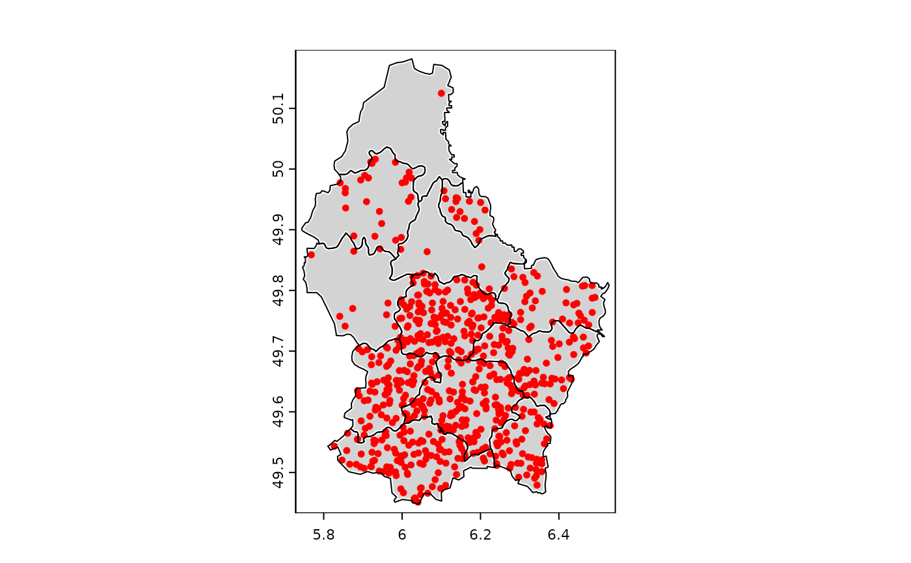

Make a dot-density map
dots.RdCreate the dots for a dot-density map and add these to the current map. Dot-density maps are made to display count data. For example of population counts, where each dot represents n persons. The dots are returned as a SpatVector. It there is an active graphics device, the dots are added to it with points.
Examples
f <- system.file("ex/lux.shp", package="terra")
v <- vect(f)
v$population <- 1000*(1:12)^2
plot(v, lwd=3, col="light gray", border="white")
d <- dots(v, "population", 1000, col="red", cex=.75)
lines(v)

d
#> class : SpatVector
#> geometry : points
#> dimensions : 650, 7 (geometries, attributes)
#> extent : 5.781312, 6.525015, 49.45332, 50.14841 (xmin, xmax, ymin, ymax)
#> coord. ref. : lon/lat WGS 84 (EPSG:4326)
#> names : ID_1 NAME_1 ID_2 NAME_2 AREA POP population
#> type : <num> <chr> <num> <chr> <num> <num> <num>
#> values : 1 Diekirch 1 Clervaux 312 1.808e+04 1000
#> 1 Diekirch 2 Diekirch 218 3.254e+04 4000
#> 1 Diekirch 2 Diekirch 218 3.254e+04 4000